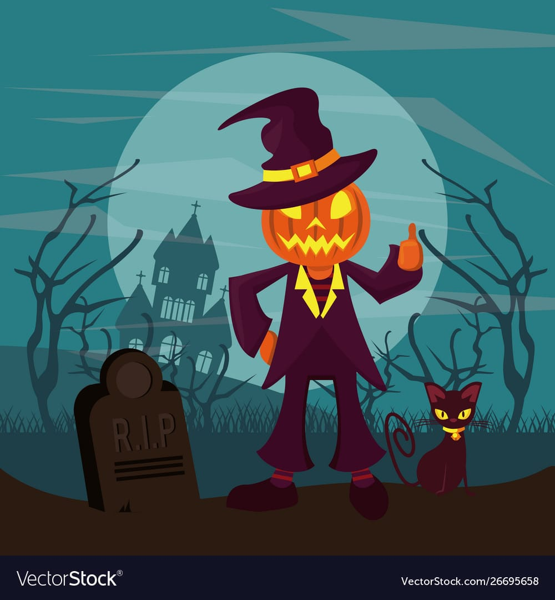
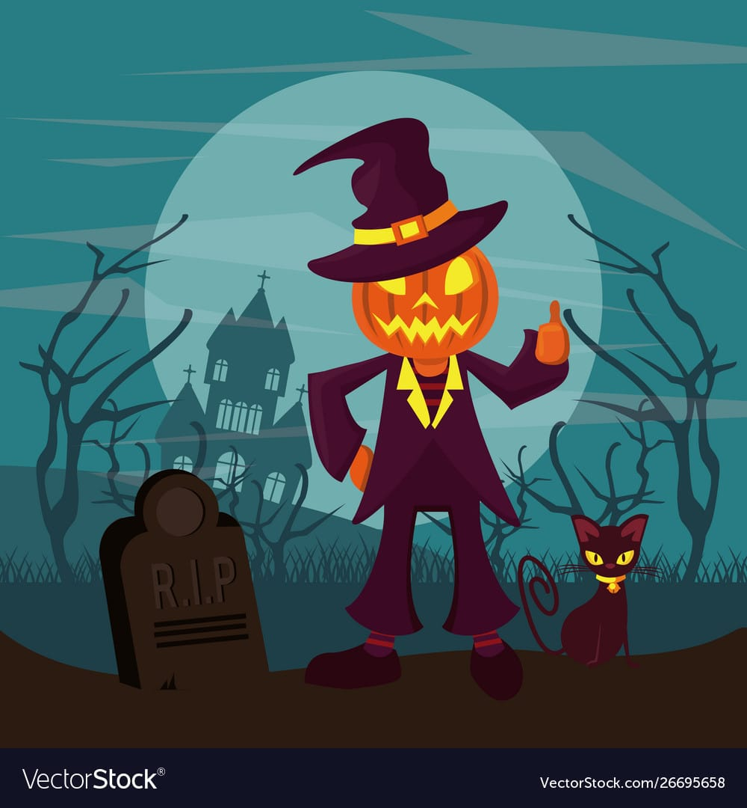

Description of the Product.....
Go On....Click on any product from side and see its Description.........😎 WARNING: You may Freak Out 😱 on seeing the dangerous history of that particular product.......
Go On....Click on any product from side and see its Description.........😎 WARNING: You may Freak Out 😱 on seeing the dangerous history of that particular product.......
